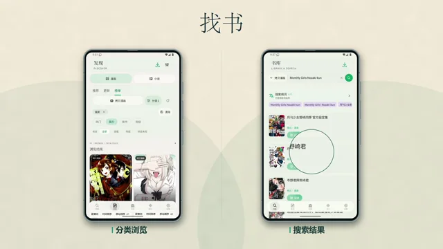
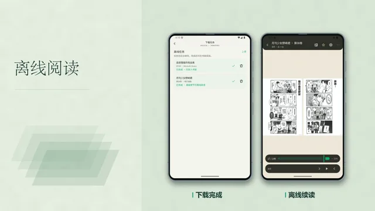
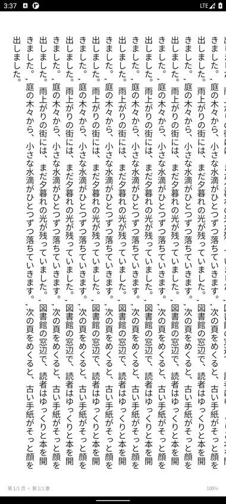
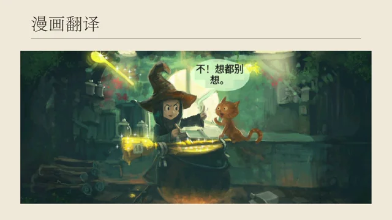
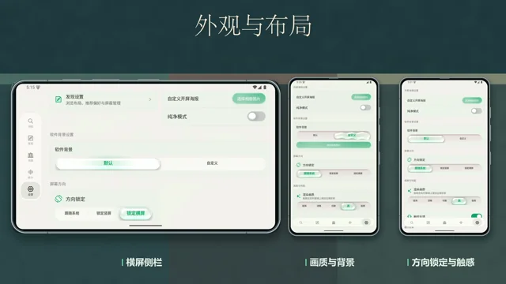

Calendar and chapter rankings
See reading time, trends, streaks, and history. Rate your favorite chapters and collect them in a ranking.
Find stories online and download them for later. Keep your own books and favorites together, then pick up on the same page.

Search by title, author, or multilingual aliases across sources. Browse novels and manga separately by source categories, recommendations, updates, or rankings.
Sort and categorize books, import in batches, and switch between a list and the 3D shelf. Pause, resume, or retry downloads, then open completed titles from the shelf.
Explore built-in sources

Adjust type, margins, themes, and touch zones. Choose page curl, cover, slide, fade, or scroll. Follow an EPUB’s writing direction or set horizontal or vertical text.


Start at the current passage with a system voice, Edge, or a custom speech endpoint. Follow highlighted text, set a sleep timer, and continue chapters in the background. Supported voices can skip 15 seconds forward or backward.
Long-press text to look it up, annotate it, or share a Reading Moment. Use imported StarDict and compatible MDX or MOBI dictionaries offline.



Read single pages, landscape spreads, webtoons, or a continuous scroll. Set reading direction, page snapping, zoom, trimming, spread splitting, and preloading.

Use fast JaNai or download full MangaJaNai. Speech bubbles and text are detected on the device. Your selected online service or custom AI endpoint provides the translation.
See reading time, trends, streaks, and history. Rate your favorite chapters and collect them in a ranking.

Customize the theme, accent, background, and rendering quality. Use phone, tablet, or landscape layouts.

Export .ciallo files or transfer over Wi-Fi and Wi-Fi Direct. Preview imports, then merge or migrate your library.
Enable providers in Settings, import Legado JSON rules, or sync Venera-compatible manga sources from a script repository. Features and sign-in requirements depend on the provider.
View the complete source guideImport plain text, styled ebooks, Kindle files, Markdown, HTML, or XHTML. PDFs open as original pages.
Local books and completed downloads can be read offline. Search, some voices, online reading, and network translation need their respective services.
Open About → Check for updates in Settings. The shared update panel offers GitHub and a regional HTTPS mirror. Mirror downloads require a verifiable official SHA-256.
Local reading requires no account. Sign-in, verification, and download access depend on the third-party source.
OCR and bubble detection run on-device. The selected online service produces translations. The full MangaJaNai model runs offline after its first download.